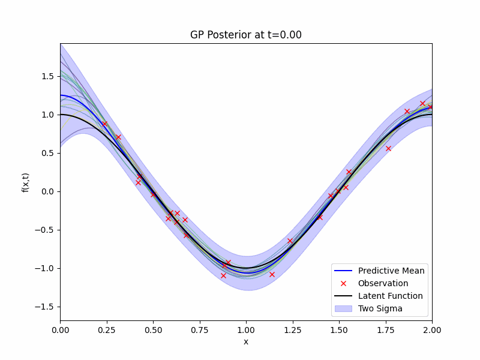
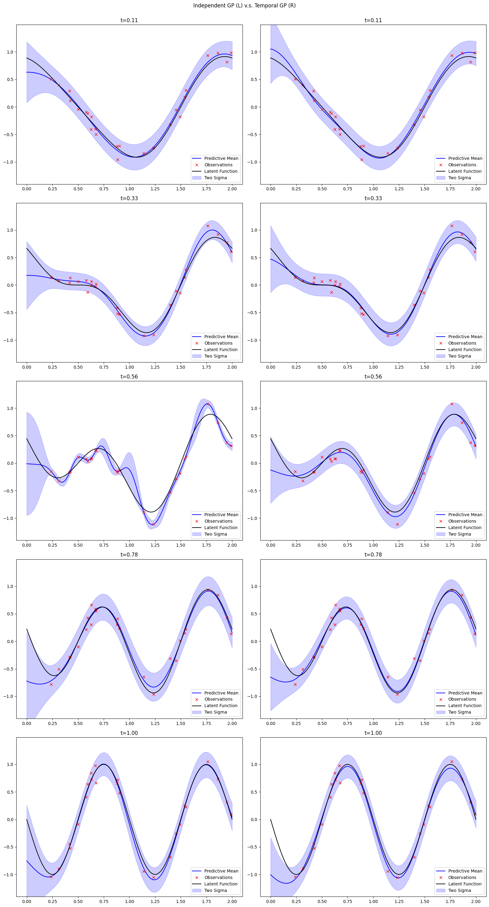
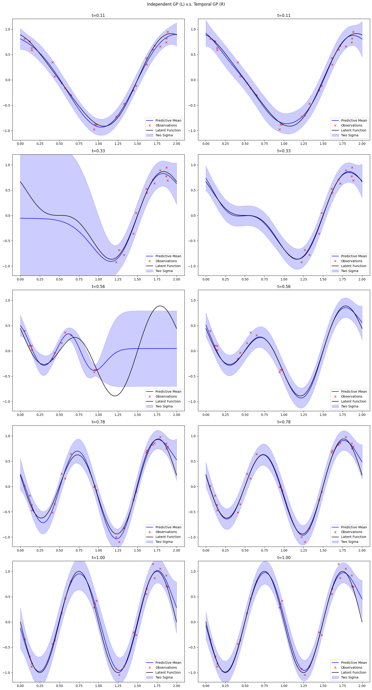

In this blog post, I will walk through how one could conduct temporal Gaussian process (GP) regression with one-dimensional space + one-dimensional time inputs and one-dimensional output. This is the first of a series of blog posts on spatial-temporal Gaussian processes.
Latent Function
The latent function that we want our GP to learn is
\[ f(x,t) = -t \sin(2 \pi x) + (1-t)\cos(\pi x) \]
where we will be focusing on the region of \(x \in [0,2]\) and \(t \in [0,1]\). We will obtain noisy observations from this function \(f\) at given time stamps and random locations. We will discretise time into \(\{0, 1/10, 2/10, \ldots, 1\}\). At each of those times, we will observe \(f\) at 25 uniformly drawn locations (same locations across time) with additive Gaussian noise with mean zero and variance 0.01. The observations, denoted by \(\mathcal{D}\) and the latent function are displayed below as a GIF.

Prior Distribution
We will need to define a Gaussian process to conduct the regression. Conceptually, we can treat time as just another dimension of the input without worrying much about its interpretation. So, we have a two dimensional input, one dimensional output Gaussian process. We would need to specify its mean and kernel functions. The mean function will be set to zero. The kernel will be a separable kernel, where we give an SE kernel to the space dimension and a Matérn 5/2 kernel to the time dimension. Therefore, our GP prior \(g\) could be written as
\[ g \sim \mathcal{GP}({0}, {k}), \qquad {k}(s,t) = k_s(s)\times k_t(t) \]
where \(k_s\) is a SE kernel and \(k_t\) is a Matérn 5/2 kernel. A consequence of this construction of the overall kernel is that the Gram matrix \({K}\) can be written as a Kronecker product, i.e.
\[ {K} = K_s \otimes K_t \]
where \({K}\) is obtained using the Cartesian product \(\{(s_i, t_j)\}_{i,j} = \{s_i\}_{i=1}^n \times \{t_j\}_{j=1}^m\) while \(K_s, K_t\) are obtained using \(\{s_i\}_{i=1}^n\) and \(\{t_j\}_{i=1}^m\) respectively. This matrix structure can be noticed easily from the following heat maps of the Gram matrices.

Back to our GP prior \(g\). We can generate samples from it and they are displayed in the following GIF.

Posterior Distribution
We have a prior and we have observations \(\mathcal{D}\), now we will need to write down the likelihood and apply the Bayes rule to obtain the posterior distribution for our GP regression. The posterior distribution \(g | \mathcal{D}\) is still a GP and its expression can be obtained exactly due to the conjugacy from the Gaussian noises. The GIF of mean, 2 standard deviation bound, and samples of the posterior distribution along with the latent function and the observations is presented below.

Benefits of Temporal Modelling
There is clear difference and benefits of directly including time into our GP model, although it increases the computational costs of regression. If we treat each GP at different time stamps as separate problems and fit a Gaussian process independently. A comparison of modelling without time and with time of the same problem is shown below.

We can see more stable performance for our temporal model, especially at \(t=0.56\) where the independent model overfits the data.
Another key benefits of having a temporal GP is that we can extrapolate our model to time stamps that we have not observed. This interpolation is not possible for the without-time model.
A natural extension of the independent across time stamps modelling approach is to consider a multi-output Gaussian process model where we jointly model the functions at different times. It turns out that, if we assume a separable kernel for the multi-output GP, then it will be (roughly) equivalent to include time in the input space.
Finally, the information borrowing across different time stamps help with the model’s robustness against missing data. In the following comparison plot, we sensor the left half and the right half of the observations at time \(t = 0.33\) and \(t = 0.56\) respectively. The independent version of the model fails immediately, while the performance of the temporal GP was not influenced by it.
